2 Chapter 2: Model building with linear regression
Module 2 covers linear regression models. Parts 1 through 4 will be mostly review for students whose introductory statistics course covered regression. Parts 5 through 8 introduce topics not usually covered in introductory courses.
For more details on regression, see section 3.5 of Answering questions with data and chapter 12 of Learning statistics with jamovi
Outline of notes:
- The linear regression equation
- Regression analysis in jamovi
- Sums of squares and mean squares
- Interpreting regression results
- Applied example (“The Binary Bias”)
- Interaction between variables
- Applied example: arthritis treatment data
- Centering predictor variables
- Standardizing predictor variables
2.1 The linear regression equation
Linear regression, in its simplest form, is a method for finding the “best fitting” line through a set of bivariate (two variable) data:
.png)
What is meant by “best fitting” will be addressed shortly. For now, think of the line as showing the underlying linear trend through a set of data.
The vertical distance between each data point and the line is called a “residual”. On the plot above, the red lines represent residuals. They quantify the amount by which a data point deviates from the underlying linear trend. Every point has a residual; the plot above only shows a few of them.
2.1.1 The linear regression equation as a statistical model
The line that is drawn through data comes from a statistical model. A statistical model is a mathematical expression describing how data are generated. It has a fixed component and a random component. Think of the fixed component as describing the underlying relationship between variables, and the random component as describing any additional variability in data beyond what the fixed component describes.
Below is the standard linear regression model. The random component is represented by \(``\varepsilon_i"\). Everything from “\(\beta_0\)” up until “\(\varepsilon_i\)” is the fixed component.
\[ Y_i=\beta_0+\beta_1x_{1i} + \beta_2x_{2i} + \dots + \beta_kx_{ki} + \varepsilon_i \\ i = 1, \dots, n \\ \varepsilon_i \sim \text{Normal}(0,\sigma^2) \]
Here’s what each term represents:
\(i\) is the index term. It counts through the data, starting at \(i = 1\) and going through \(i=n\), where \(n\) is the sample size.
\(Y_i\) is the \(i^{th}\) value of the outcome variable. When written in upper-case, \(Y_i\) is treated as a random variable whose value has not been observed. When written lower-case, \(y_i\) represents an observed data value.
\(Y_i\) is often referred to as the “response” variable, or the “dependent” variable. These notes will use the term “outcome” variable. I prefer this term on the grounds that the others seem to imply causality: if \(Y\) is “responding” to \(x\), or “dependent” on \(x\), then it sounds like changing the value of \(x\) will induce a change in the value of \(Y\).
\(x_{1i}\) is the \(i^{th}\) value of the first predictor (i.e. independent) variable. \(x_{2i}\) is the \(i^{th}\) value of the second predictor, etc. The \(x's\) are always written lower-case, and technically are assumed to be fixed values, either set prior to data collection or measured without error.
\(\beta_1\) is the slope (i.e. regression coefficient) for the first predictor variable. \(\beta_2\) is the slope of the second predictor, etc. The \(\beta's\) are parameters, meaning their values are treated as fixed (existing at the “population” level) but unknown.
We use data to calculate estimated values for the \(\beta's\), and these estimates are written using hat notation. For example, \(\hat{\beta_1}\) is the estimated value for \(\beta_1\).
\(\varepsilon_i\) is the \(i^{th}\) random error value. This is the amount by which \(Y_i\) differs from \(\beta_0+\beta_1x_{1i} + \beta_2x_{2i} + \dots + \beta_kx_{ki}\), i.e. the fixed component of the model.
The amount by which \(y_i\) (the \(i^{th}\) observed value of \(y\)) differs from \(\hat{\beta_0}+\hat{\beta_1}x_{1i} + \hat{\beta_2}x_{2i} + \dots + \hat{\beta_k}x_{ki}\) is called the \(i^{th}\) residual, which we can denote \(e_i\).
The errors are modeled as random values that are drawn from a normal distribution with mean zero and variance \(\sigma^2\).
The errors in a regression model do not have to come from a normal distribution. This assumption is made in order to justify inferences about the coefficients; more on this soon.
When a regression model has only one predictor variable, it is called a “simple” regression model. If it has more than one predictor variable, it is called a “multiple regression” model.
2.1.2 Assumptions of the regression model
This model implies some assumptions:
The response variable \(Y\) is an additive, linear function of the predictors (the \(x\) variables)
If we fix the value(s) of the \(x\) variable(s), all values of \(Y\) will be normally distributed. In other words, the errors are normally distributed.
The errors have the same variance regardless of the values of the \(x's\). This variance is denoted \(\sigma^2\)
The square root of the variance is the standard deviation, denoted \(\sigma\). Standard deviation is expressed in the same units of the original variable, whereas variance is expressed in squared units.
For this reason, standard deviation is typically referred to when interpreting statistical results. Variance has desirable mathematical properties, and so is more often referred to in statistical theory
Visually, this model treats values of Y as being generated randomly from normal distributions centered on the line:
.png)
(figure derived from OpenStax Introductory Business Statistics, section 13.4)
The “errors” are the distances between the line and the values generated from the normal distributions.
The errors are treated as random and uncorrelated: knowing the value of one error tells you nothing about the likely value of the next.
2.2 Regression analysis in jamovi
2.2.1 Simulating the regression model in jamovi
We noted earlier that a statistical model is data generating. It describes, mathematically, how values of the outcome variable \(Y\) can be created. Consider the “simple” (single \(x\) ) regression model:
\[ Y_i=\beta_0+\beta_1x_{i} + \varepsilon_i \\ \varepsilon_i \sim \text{Normal}(0,\sigma^2) \]
If we have values for \(\beta_0\), \(\beta_1\), and \(\sigma^2\), when we can plug in values for \(x_i\) to generate values for \(Y_i\). Let’s do this using jamovi.
In jamovi, we first create X values by double-clicking an empty column, choosing “New Computed Variable” then the \(f_x\) drop down menu and double click UNIF.
.png)
Here, we are generating 100 random values from a \(Uniform(0,100)\) distribution. The uniform distribution is a distribution where all values are equally likely, so we should get an even spread of values between 0 and 100.
To simulate values of the response variable, we’ll need to make up values for each parameter in the model. Say we want to generate values from this model:
\(Y_i=10+0.7x_i+\varepsilon_i \quad \varepsilon_i \sim Normal(0,8^2)\)
This means we’ve decided that \(\beta_0=10\), \(\beta_1=0.7\), and \(\sigma=8\). And since we’ve generated 100 values for \(x_i\), we’ve also decided that \(i=1\dots 100\)
Double click an empty column and choose “New Computed Variable”:
.png)
Now make the formula look like the right side of the regression equation from the previous slide:
.png)
Now we can take a look using Scatterplot, a downloadable jamovi module. Click the icon of the plus sign labeled “Modules” to bring up a list of available modules you can install. We will use many modules in STAT 331.
.png)
After installation, Scatterplot is available under Exploration in the Analyses tab. You can assign the X and Y axis variables, and get a plot that looks something like this:
.png)
These are random data, so yours will look a little bit different. But the scales of the axes and vertical spread of the data should be similar.
Next, we’ll fit a regression model to this data. In practice, we do not know the values of the parameters in our model, so we estimate them using data. This is known as “fitting” the model to the data. The point of this simulation is to look at what kind of results we get when fiting a regression model to fake data that was produced by a mechanism we fully understand.
2.2.2 Fitting a regression model in jamovi
We can use Regression / Linear Regression to fit a “simple” regression model, which is a regression model with just one predictor.
-01.png)
The response variable is “Dependent Variable”.
The predictor variable goes under “Covariates”.
.png)
After selecting variables, model will automatically be fit, and output will be generated to the right under “Results”.
.png)
Based on these results, here is the estimated regression model:
\[ \hat{y_i}=\hat{\beta_0}+\hat{\beta_1}x_i=9.1+0.71x_i \]
\[ \hat{\sigma}=\sqrt{MSE}=\sqrt{64.8}=7.93 \]
Note that it is standard to denote estimated values using “hats”. The “estimate” column is where we find the values for the estimated regression coefficients \(\hat{\beta_0}\) and \(\hat{\beta_1}\). “RMSE” (“root mean square error”) is the estimated standard deviation of the errors, assumed to have come from a normal distribution. Compare these results to the values used to generate our fake data:
\[ \begin{align} &\beta_0=10 &\beta_1=0.7 \quad &\sigma=8 \\ &\hat{\beta_0}=9.099 &\hat{\beta_1}=0.712 \quad &\hat{\sigma}=7.93 \\ &s_{\hat{\beta_0}}=1.776 &s_{\hat{\beta_1}}=0.034 \end{align} \]
2.2.3 The \(R^2\) statistic
Note that the output tells us \(R^2=0.874\). This is a statistic quantifying how well this model can “predict” the data used to fit it. It is found from the “sum of squares” values in the ANOVA table, Generically:
\[ R^2=\frac{\text{model sum of squares}}{\text{total sum of squares}}=\frac{\text{model sum of squares}}{\text{model sum of squares + residual sum of squares}} \]
“Sums of squares” are used to quantify variance. You can think of this as being short for “sum of the squared distances between some values and their mean”. For example, the variance statistic is
\[ s^2=\frac{\sum_{i=1}^n (y_i-\bar{y})}{n-1}\ \] The numerator, \(\sum_{i=1}^n (y_i-\bar{y})\), is a “sum of squares” - the sum of the squared deviations between all the values of \(y_i\) and their mean, \(\bar{y}\).
In this example:
\[ R^2=\frac{29162}{29162+4211}=0.874 \]
So, in this case, \(87.4\%\) of the total variance in \(Y\) can be accounted for using the values of \(x\). Here’s the data again, with the estimated regression line added:
.png)
The total variance in \(Y\) quantifies how much the data vary vertically around the horizontal red line, which is the mean of \(Y\).
The residual (or “error”) variance quantifies how much the data vary vertically around the regression line.
Here, the data are relatively much closer to the regression line than to the the horizontal mean line, and so residual sum of squares is only a small portion of the total sum of squares, making \(R^2\) fairly large.
An alternative interpretation of \(R^2\) is that is quantifies the proportional decrease in residual variance when using the regression line rather than using only the mean of \(Y\).
Looking at the plot above, you can imagine drawing vertical lines from each data point to the horizontal red line representing the mean of \(Y\). If you squared these lines and added them up, you’d have the total sum of squares, which would also be the residual sum of squares if you were using only the mean of \(Y\) to calculate residuals. In this case, using the regression line instead of just the mean to calculate residuals would represent an \(87.4\%\) decrease in residual sum of squares.
Said differently, \(R^2\) tells you how much better your predictions for \(Y\) would be if you use the regression line rather than only the mean.
2.2.4 There is no “good” or “bad” value for \(R^2\)
When residual variance in \(Y\) is larger, \(R^2\) is smaller. Visually, when the data are more spread out around the regression line, \(R^2\) is smaller. Is this “bad”? I want you to resist such an interpretation. A small \(R^2\) tells you that \(Y\) is being influenced by a lot more than just what is in your model. And this is often to be expected.
For instance, if I’m trying to predict how many tomatoes are produced per tomato plant in different parts of the country and my only predictor variable is average daily outdoor temperature, I should not expect a large \(R^2\). This is because there are many many more variables that influence how many tomatoes will grow (e.g. properties of soil, watering schedule, fertilizer, pests…). But, a small \(R^2\) should not be interpreted as “average daily outdoor temperature doesn’t matter when growing tomatoes”. It should be interpreted as “there are way more other things that matter when growing tomatoes, and their combined influence is much greater than average daily outdoor temperature alone”.
2.3 Sums of squares and mean squares
We will look at some formulas in this section. Some are based on sums of squares, which are reported in the ANOVA table.
Total sum of squares quantifies total variability in \(y\):
\[ SS_{Total} = \sum^n_{i=1}(y_i - \bar{y})^2 \]
Note that this has nothing to do with the regression line, or the predictor variable. It quantifies variability in the response variable alone.
2.3.1 Total sum of squares
Visually, \(SS_{Total}\) is the sum of the squared vertical deviations between each data point and the mean of 𝑦, shown here as a horizontal line.
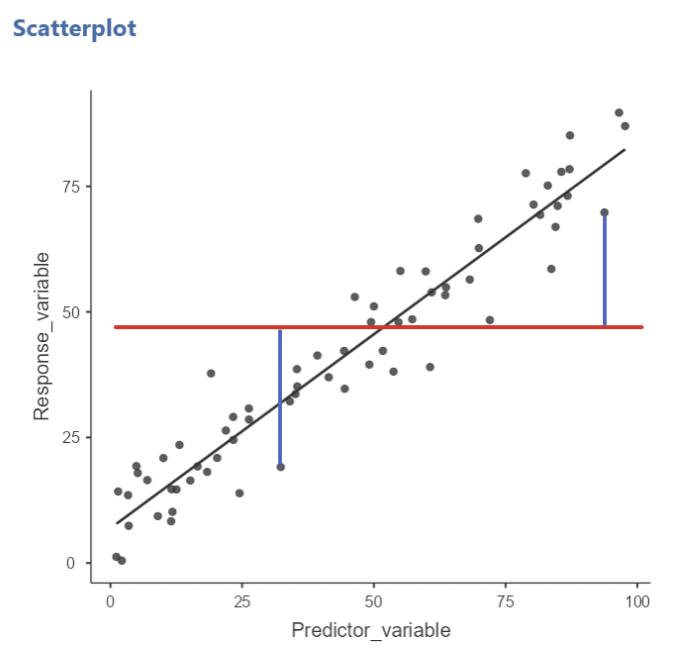
The two blue lines drawn are two such instances of these deviations. If we drew these for every data point, squared them, and added them up, we’d have \(SS_{Total}\)
Again, note that this quantity has nothing to do with the regression line!
2.3.2 Residual / Error sum of squares
Error sum of squares quantifies total variability in 𝑦 around the regression line:
\[ SS_{Error} = \sum^n_{i=1}(y_i - \hat{y}_i)^2 = \sum^n_{i=1}[y_i - (\hat{\beta}_0 + \hat{\beta}_1)]^2 \]
This is also known as the “sum of the squared residuals”, where a residual is the vertical distance between a data point and the regression line. The values of \(\hat{\beta}_0\) and \(\hat{\beta}_1\) are chosen so as to minimize \(SS_{Error}\).
In other words, the regression line drawn through the data produced a smaller \(SS_{Error}\) than any other line we could possibly draw.
Visually, \(SS_{Error}\) is the sum of the squared vertical deviations between each data point and the regression line.
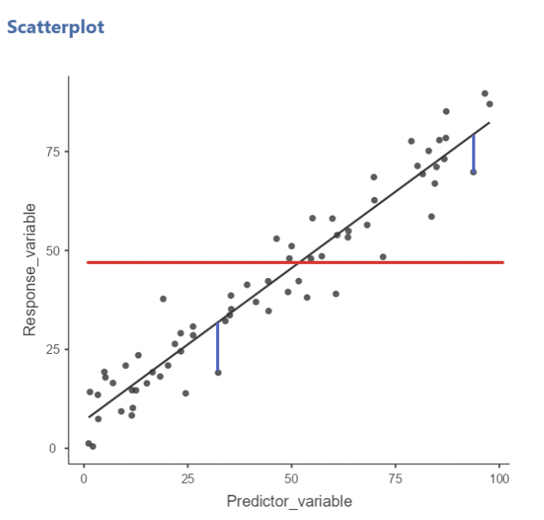
Here, the blue lines are two instances of these deviations
\(SS_{Error}\) will be larger when the data are more spread out around the line, and vice versa.
2.3.3 Mean square error
Error mean square (aka mean square error) is given by
\[ MSE = MS_{Error} = \frac{SS_{Error}}{n-k +1} \]
\(k\) is the number of predictor variables. Example: for simple regression, \(k = 1\), so \(MSE = \frac{SS_{Error}}{N-2}\)
As seen earlier, \(\sqrt{MSE}\) is the estimate for the standard deviation of the residuals around the line: \(\hat{\sigma} = \sqrt{MSE}\)
2.3.4 Model sum of squares
Model sum of squares (aka “regression sum of squares”) is given by:
\[ SS_{Model} = \sum^n_{i=1}(\hat{y}_i - \bar{y})^2 \]
This can be thought of as quantifying how much better the model is than \(\bar{y}\) alone at accounting for variation in the values of \(y\).
Visually, \(SS_{Model}\) is the sum of the squared vertical deviations between the regression line and the horizontal line, at each value of the predictor variable.
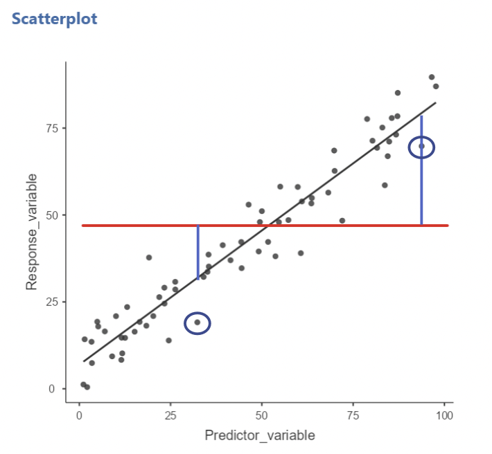
Here, the blue lines are two instances of these deviations, associated with the circled blue data points.
2.3.5 \(SS_{Total} = SS_{Error} + SS_{Model}\)
Total sum of squares are equal to the sum of error sum of squares and model sum of squares.
Note that this also implies:
\[ SS_{Model} = SS_{Total} - SS_{Error} \\ SS_{Error} = SS_{Total} - SS_{Model} \]
2.4 Interpreting regression results
Here again is the estimated model from the previous example:
\[ \hat{y}_i = 9.1 + 0.71x_i \]
The intercept, \(\hat{\beta}_0 = 9.1\), gives the predicted value of the response variable (\(y\)) when the predictor variable (\(x\)) equals zero. This is not typically of practical interest.
The slope, \(\hat{\beta}_1 = 0.71\), gives the predicted change in \(y\) for a one unit increase in \(x\).
2.4.0.1 More on interpreting the slope
The slope is often of practical interest. It tells us how much the response variable changes, on average, when the predictor variable increases by one unit.
This interpretation is very common. It is also dangerous, because it is phrased in a way that suggests changes in 𝑥 cause changes in \(y\).
Here is an alternate, non-causal sounding interpretation:
If we observe two values of \(x\) that are one unit apart, we estimate that their corresponding average \(y\) values will be \(\hat{\beta}_1\) units apart.
Visually, we can choose two values of \(x\), go up to the line, and record the values of \(y\). The slope tells us how much these \(y\) values are expected to differ.
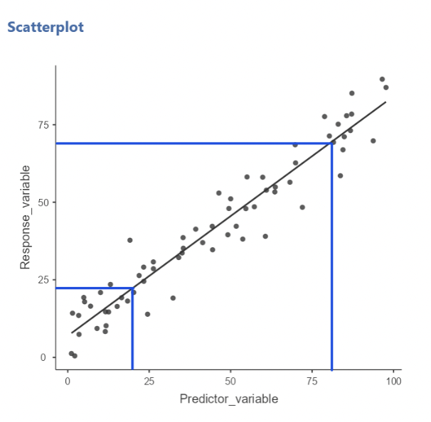
Here, when we compare \(x = 20\) and \(x = 80\), we expect their corresponding \(y\) values to differ by:
\[ (80 − 20) ∗ 0.725 = 43.5 \]
2.4.0.2 Inference on the coefficients
For each estimated coefficient (\(\hat{\beta}_0\) and \(\hat{\beta}_0\)), jamovi reports a standard error, along with a t-test statistic and p-value testing the null that the parameter being estimated equals zero.
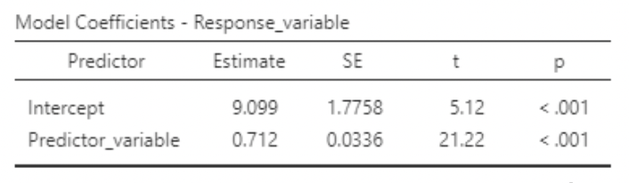
Example: the above output shows the test of \(H_0: \beta_1 = 0\)
\[ t = \frac{\hat{\beta}_1}{s_{\hat{\beta}_1}} = \frac{0.712}{0.034} = 21.22\\ p-value < 0.01 \\ \text{"reject } H_0" \]
We can use these results to create an approximate 95% confidence for \(\beta_1\):
\[ 95\% \text{ CI for } \beta_1 \approx \hat{\beta}_1 \pm 2* s_{\hat{\beta}_1} = 0.712 \pm 2*0.034 = (0.645,0.779) \]
This is a very narrow interval, suggesting a “precise” estimate of \(\beta_1\)
For both the hypothesis test and 95% CI, the results depend on how large the estimate of \(\beta_1\) is, relative to its standard error.
In this case, \(\hat{\beta}_1\) is very large relative to \(s_{\hat{\beta}_1}\), so the result is “highly significant” and the 95% CI is narrow.
2.4.0.3 Formulas for \(\hat{\beta}_1\) and \(s_{\hat{\beta}_1}\)
Now that you’ve seen how \(\hat{\beta}_1\) and \(s_{\hat{\beta}_1}\) are used, here are their formulas:
\[ \hat{\beta}_1 = r_{xy} * \frac{s_y}{s_x} \\ s_{\hat{\beta}_1} = \sqrt{\frac{MSE}{\sum^n_{i=1}(x_i - \bar{x})^2}} = \sqrt{\frac{1-R^2}{n-k-1}}*\frac{s_y}{s_x} \]
\(\hat{\beta}_1\) is larger when the correlation between \(x\) and \(y\) is stronger, and when the variability in \(y\) is larger relative to the variability in \(x\).
\(s_{\hat{\beta}_1}\) is smaller when \(R^2\) is larger, when \(n\) is larger, and when the variability in \(x\) is larger relative to the variability in \(y\).
2.5 Applied example: “The binary bias”
There is a paper up on Canvas, titled “The Binary Bias: A Systematic Distortion in the Integration of Information”. This is a 2018 paper published in Psychological Science with open data.
The overall hypothesis is that people tend to assess continuous information using binary thinking. The experiments all involve testing to see if participants will give higher or lower assessments of where an average lies, based on the “imbalance” of the data: i.e. the comparative frequency with which very low or very high values turn up.
Here is the section of the paper describing the results of Study 1a:
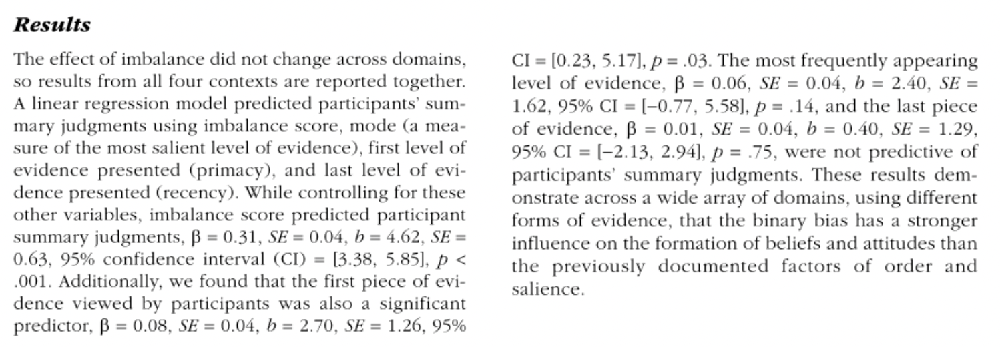
The data:
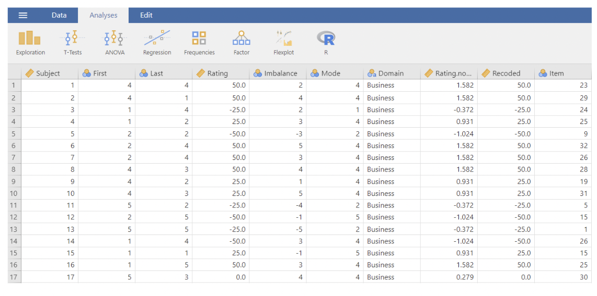
Telling jamovi to fit the model:
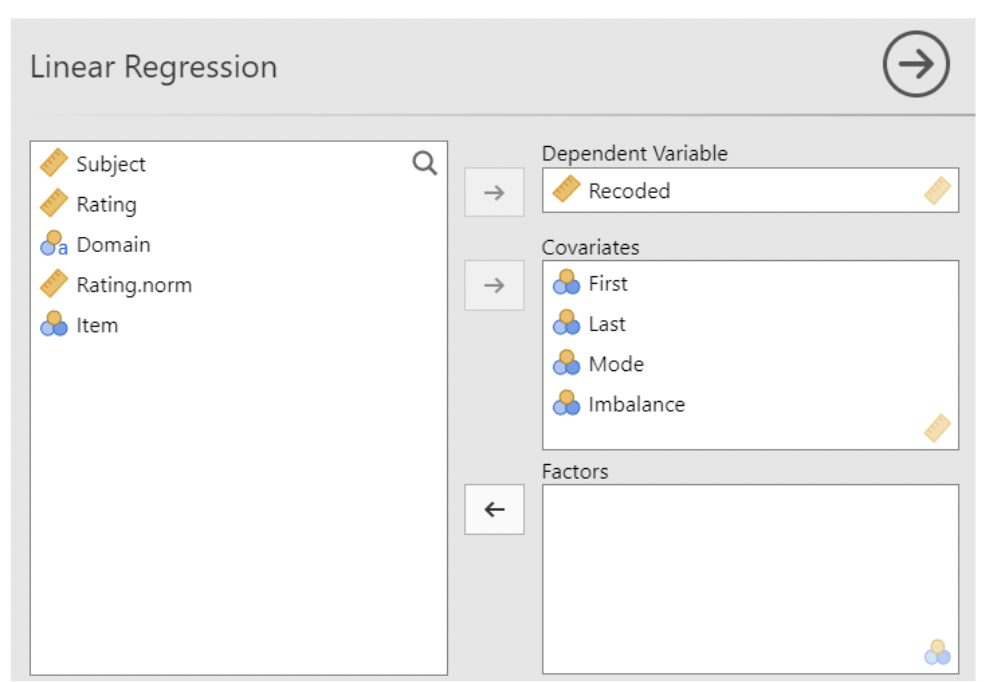
The model, before being fit to the data:
\[ Recorded_i = \beta_0 + \beta_1Imbalance_i + \beta_2Mode_i + \beta_3First_i + \beta_4Last_i + \epsilon_i \]
The results in jamovi:
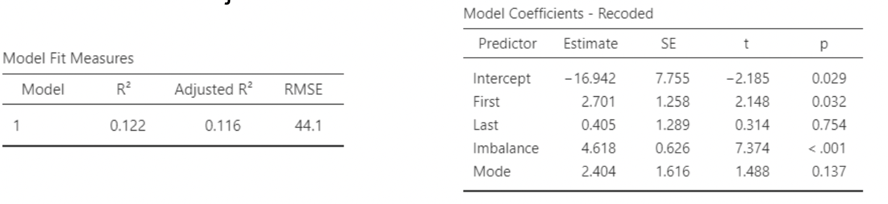
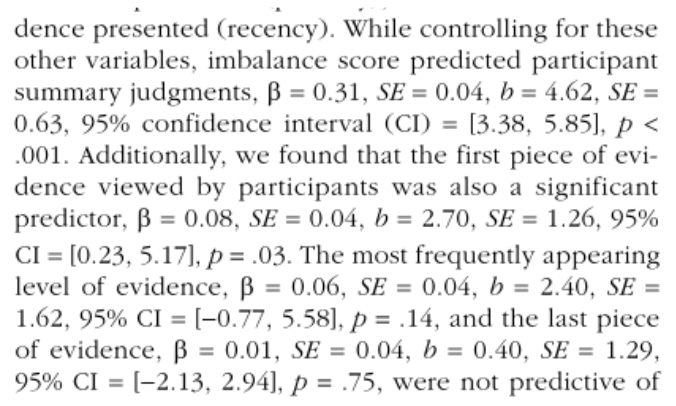
Note that the estimated slope is being denoted as \(b\) rather than as \(\hat{\beta}_1\). \(\hat{\sigma} = MSE\). Note also how the 95% CI was created: \(\approx 4.62 ± 2 ∗ 0.63\)
The paper does not mention \(R^2\). We can see it in the jamovi output, and calculate it from the ANOVA table:
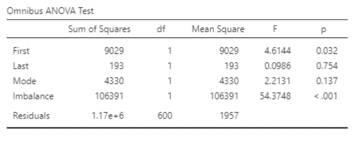
\(R^2 = 0.12\). So, about 12% of the total variance in “Recorded” is being “explained” or “accounted for” in the model.
In multiple regression, each predictor is interpreted under the assumption that the values of all other predictors are held constant (i.e. “controlled for”).
So, if we were to observe two participants who were equal in terms of “First”, “Last”, and “Mode”, but were one unit apart in terms of “Imbalance”, we would expect their values for the response variable (“Recorded”) to differ by 4.62 units on average.
Or: The predicted (or average) difference in Recorded associated with a one unit difference in Imbalance is 4.62 units, if all other predictors are held constant.
2.6 Interaction
“Interaction” is the phenomenon by which the association between a predictor variable and a response variable is itself dependent on the value of another predictor.
Say we have response \(y\), one predictor \(x_1\), and another predictor \(x_2\). We say that \(x_1\) and \(x_2\) interact if the amount of change in \(y\) associated with a change in \(x_1\) is different for different values of \(x_2\), or vice versa.
You can think of this as saying that the “slope” of \(x_1\) depends upon the value of \(x_2\).
Another way of saying it: if the answer to the question:
“How much does our estimate for \(y\) change when \(x_1\) changes?“
is:
“It depends on the value of \(x_2\)“,
then \(x_1\) and \(x_2\) interact.
2.6.1 Interaction example
Suppose a drug for treating rheumatoid arthritis is more effective at reducing inflammation for younger patients than it is for older patients.
If we conduct an experiment in which inflammation is the response variable and the predictors are treatment group (drug vs. control) and age, then we expect treatment group and age to interact.
This is different from saying that age and treatment both affect inflammation. It means that the extent to which treatment affects inflammation is different for patients of different age.
Sometimes interaction is referred to as “moderation”. This is common in the social and behavioral sciences, particularly Psychology.
So, a “moderator” variable is one that changes how the primary predictor of interest relates to the response.
Example: suppose an experiment shows that subjects holding a pen with their teeth rate cartoons as funnier vs. subjects holding a pen with their lips.
Suppose also that this “pen in teeth” effect disappears if subjects see a video camera in the room.
In this case, the presence of the video camera “moderates” the effect of the pen on cartoon ratings. In the language of interaction, the presence of the pen and the presence of the video camera “interact”.
This is based on a real study that has generated controversy, see:
https://statmodeling.stat.columbia.edu/2018/11/01/facial-feedback-findings-suggest-minute-differences-experimental-protocol-might-lead-theoretically-meaningful-changes-outcomes/
2.6.2 Interaction, in the regression model
Mathematically, we create an interaction variable by multiplying predictor variables by one another.
So, if we want to allow \(x_1\) and \(x_2\) to interact, we simply make a new variable defined as \(x_1*x_2\).
This interaction variable will be used as an additional predictor variable in the regression model:
\[ Y_i = \beta_0 + \beta_1x_{1i} + \beta_2x_{2i} +\beta_3(x_1x_2)_i + \epsilon_i \\ \text{ where } \epsilon_i \sim Normal(0,\sigma^2) \]
The interaction coefficient is \(\beta_3\) in this model:
\[ Y_i = \beta_0 + \beta_1x_{1i} + \beta_2x_{2i} +\beta_3(x_1x_2)_i + \epsilon_i \\ \text{ where } \epsilon_i \sim Normal(0,\sigma^2) \]
To interpret this, let’s look at how it affects the coefficients (aka slopes) for \(x_1\) and \(x_2\).
We can think of the “slope” of a predictor as everything it is being multiplied by.
\[ Y_i = \beta_0 + \beta_1x_{1i} + \beta_2x_{2i} +\beta_3(x_1x_2)_i + \epsilon_i \]
Factoring out \(x_1\) from the above regression equation gives:
\[ Y_i = \beta_0 + (\beta_1 + \beta_3x_{2i})x_{1i} + \beta_2x_{2i} + \epsilon_i \]
Similarly, factoring out \(x_2\) gives:
\[ Y_i = \beta_0 + (\beta_2 + \beta_3x_{1i})x_{2i} + \beta_1x_{1i} + \epsilon_i \]
So, for this model, the “slope” of \(x_1\) is \(\beta_1 + \beta_3x_2\), and the “slope” of \(x_2\) is \(\beta_2 + \beta_3x_1\)
In other words, the slope of \(x_1\) depends on the value of \(x_2\), and vice versa. For different values of \(x_2\), the “predicted change in \(y\) for a one unit increase in \(x_1\)” (i.e. the slope of \(x_1\)) will be different.
A simpler way of saying this is that, if two predictors interact, then the effect of one predictor on the response depends on the value of the other predictor.
(This is a simpler interpretation, but also potentially misleading in that the term “effect” sounds causal. Nonetheless it is commonly used language when interpreting slopes.)
2.7 jamovi Example: Arthritis data
The data set “arthritis_data.csv” contains simulated data from a (fictional) Randomized Control Trial comparing treatments for inflammation from rheumatoid arthritis: a disease-modifying anti-rheumatic drug (DMARD) vs. a non-steroidal anti-inflammatory drug (NSAID)
- The variables are:
- Drug: indicator (0 / 1) variable; 1 = DMARD, 0 = NSAID
- Before: Inflammation scan score prior to treatment (scale: 0 to 50)
- After: Inflammation scan score six months after treatment
- Difference: Difference in scores, before minus after. (Note that larger values2.7.0.1 Before vs. after scatterplot
We will fit some regression models using this data, but first let’s take a look at our data using the Scatterplot module.
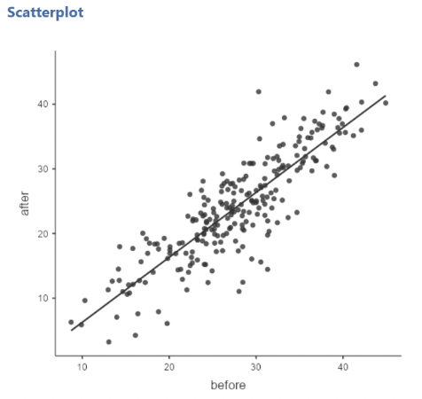
Here is “after” vs. “before”, with a linear regression line superimposed. Note that most patients had greater inflammation before than after treatment.
2.7.0.2 Differences by treatment type
Note that the differences tend to be larger for the DMARD group: this corresponds to a greater reduction in inflammation.
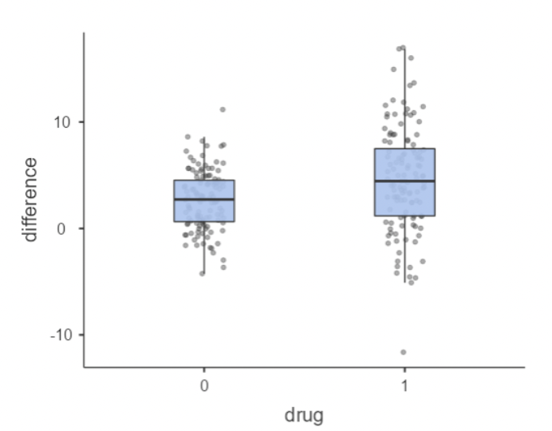
Use Descriptives to create the boxplot. Select difference as a Variable and Split by drug. Then select under Plots – Box plot and Data Jittered to superimpose data.
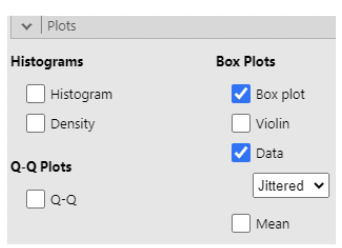
2.7.0.3 Before vs. age scatterplot
Here we see that age is positively correlated with inflammation before the drug trial.
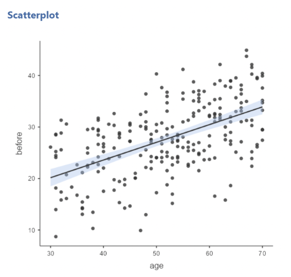
jamovi gives options to superimpose regression output on a scatterplot.
jamovi can also plot “standard error” bands around the line. These show the standard error for the average value of y (“before”), given x (“age”).
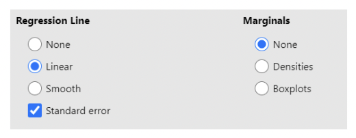
2.7.0.4 Difference vs. before
We don’t see an association between amount of inflammation before treatment and reduction in inflammation…
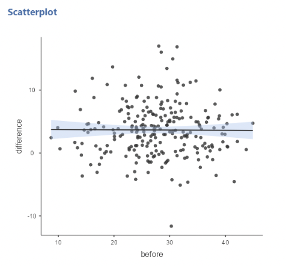
… but maybe we do if we add in drug! Do “drug” and “before” interact here?
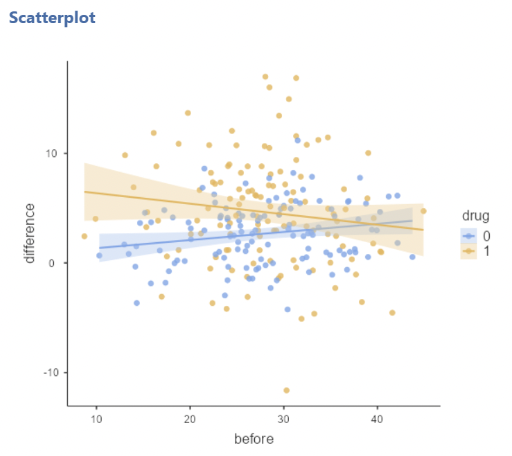
2.7.0.5 Difference vs. age
We see a small negative correlation between difference and age…
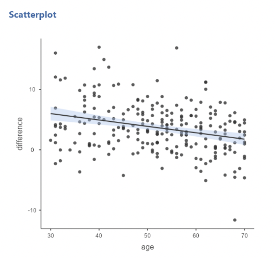
… but when we add drug, we see no correlation for the NSAID and clear negative correlation for the DMARD. Definite interaction!
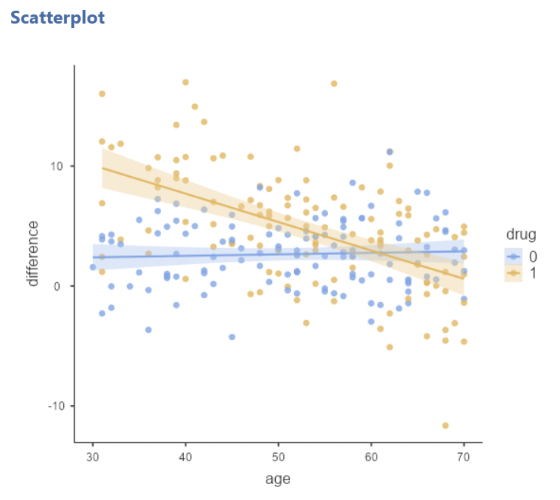
2.7.0.6 Now with model output…
The following slides show the plots again, plus the regression output JMP produces. First up, Difference vs. Drug, using t-test:
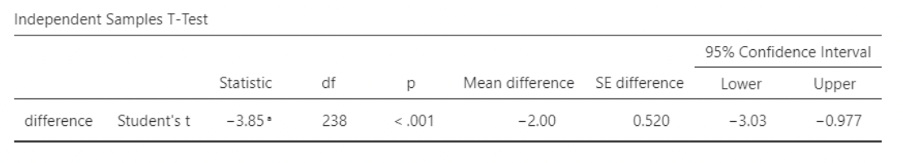
And using regression:
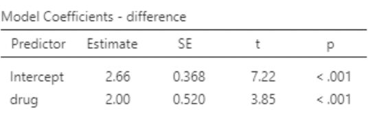
OMG! The estimated slope for “drug” is the same as the difference in means between the drugs!
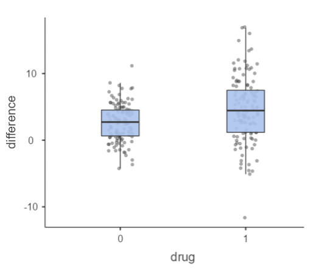
2.7.0.7 Before vs. age
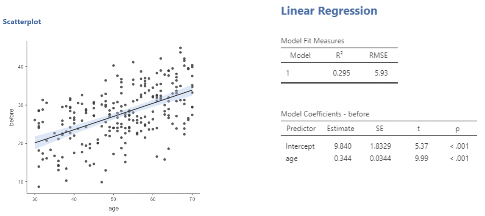
2.7.0.8 Difference vs. age, with drug interaction
Here, we are fitting the model:
\[ Difference_i = \beta_0 + \beta_1age_i + \beta_2drug_i + \beta_3(age*drug)_i + \epsilon_i \]
To do this, create a new column in jamovi, defined as \(age*drug\). May as well label it “\(age*drug\)“.
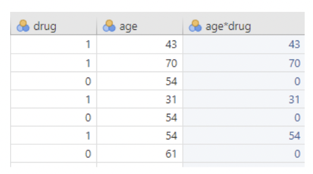
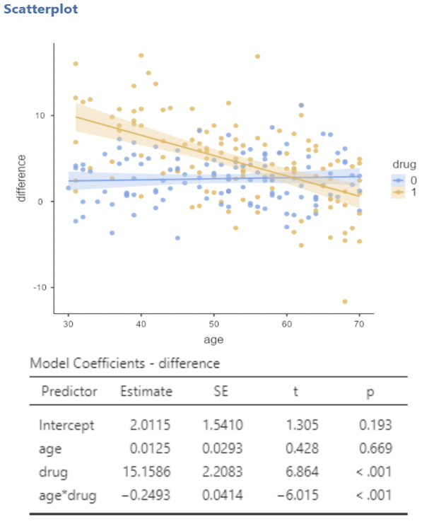
Notice that the slope of “age” by itself is for when drug = 0. The age*treatment interaction shows how much the slope of “age” changes when treatment = 1.
\[ \widehat{difference} = 2.0114 + 0.0125(age) + 15.1586(drug) -0.2493(age*drug) \]
Slope of “age” when drug = 1 is: \(0.0125 − 0.2493 = −0.2368\)
Notice also that the slope of “age” by itself is nowhere close to being statistically significant (the estimate is less than half the standard error), but the slope of the interaction is highly significant (the estimate is 6 times as large as the standard error)
Now take a look at the plot. There is a clear negative correlation between age and difference when drug = 1. There is essentially none when drug = 0.
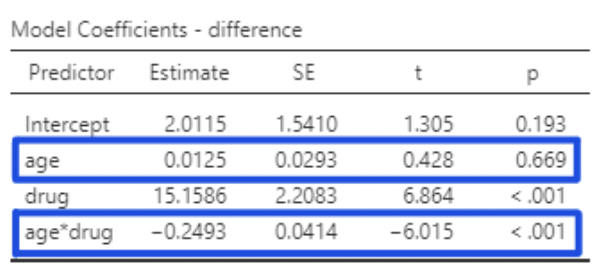
Another way of thinking about this interaction:
If we ask the question: “how does inflammation reduction differ by age?”, the answer is “it depends on which drug the patient took.”
Similarly, if we ask the question: “how does inflammation reduction differ by drug?”, the answer is “it depends on the age of the patient.”
2.7.0.9 Interaction is NOT correlation!
In this example, we see a clear interaction between drug and age: the slope for age is negative for DMARD and flat for NSAID.
Another way of thinking about this: DMARD appears to be more effective for younger patients than for older patients. NSAID appears to be equally effective regardless of age.
HOWEVER – this does NOT mean that treatment and age are correlated!
This should make sense, after all patients were randomly assigned to one of the two drugs. If drug were correlated with age, there would be bias in this study. The whole point of randomization is to remove correlations!
Just to confirm, here is the distribution of age, split by drug:
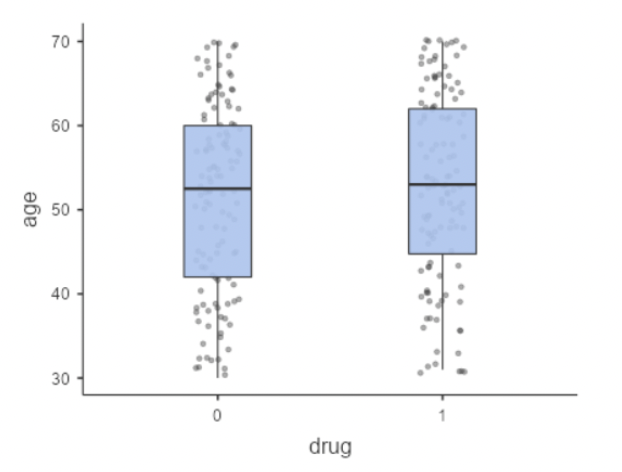
Again, age and drug “interact” when it comes to their associations with the differences in inflammation scores: the association between “age” and “difference” is different for the two different drugs.
Similarly, the association between “drug” and “difference” is different for patients of different ages.
But, age and drug are not correlated with one another!
2.8 Centering predictor variables
\[ \widehat{difference} = 2.0114 + 0.0125(age) + 15.1586(drug) -0.2493(age*drug) \]
There is a serious challenge when interpreting the slope for “drug”: this slope is only 15.1586 if \(age = 0\). But \(age = 0\) is not of interest.
Plug in mean age (52.096) and see what happens to the slope for drug:
\[ 15.1586(drug) − 0.2493(52.096*drug) \\ = (15.1586 − 0.2493 ∗ 52.096)(drug)\\ = 2.171(𝑑𝑟𝑢𝑔) \]
So, for patients at mean age, the predicted difference in inflammation is 2.171 units greater under the DMARD than under the NSAID
This process of estimating slopes at the average value of predictors can be done via “centering”
Centering means subtracting the mean from a variable’s distribution.
In this example, \(centered\text{ }age = age - \overline{age} = age - 52.096\)
This is very useful when using interaction terms in a regression model.
2.8.0.1 Centered interaction in jamovi
To center age, create a new columns called “centered age”, defined as age – VMEAN(age).
Create another new column for “centered drug”, defined as drug – VMEAN(drug). Now create a final column defined as centered drug * centered age, call it “centered age*drug”
We can’t use MEAN() to center variables in jamovi since it works across variables, one row at a time. What we want is to take the overall mean of a variable and subtract it from each measurement.
So, use VMEAN() to center variables in jamovi.
Compare the new results (on the left) to the results we saw when using the interaction term we created manually (on the right)
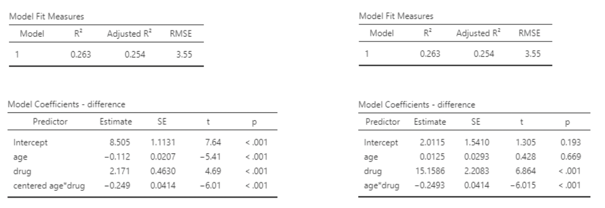
2.8.0.2 Centered interaction in JMP
The “Model Fit Measures” are identical. Centering has no effect on \(R^2\) or any sums of squares.
Centering also had no effect on the slope for the interaction, or on its standard error. But, look at the individual “age” and “drug” predictors.
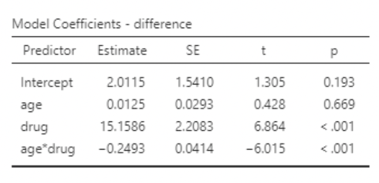
These slopes are different, because they are being calculated at the mean value of the other.
Centering also reduces the standard errors of the individual slopes!
2.8.0.3 Centered interaction in jamovi
Look at the slope for drug when using a centered interaction: it’s the same value we calculated by plugging the mean of age into the interaction term in the non-centered model!
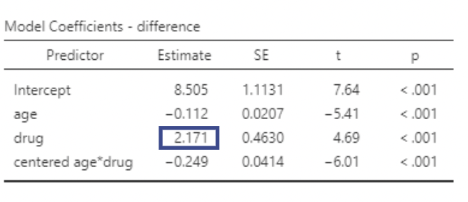
The slope for age in the centered model is harder to interpret. It is calculated at the “average” for drug, which doesn’t make real world sense.
2.8.0.4 Only centering one predictor in jamovi
It would be best if we could center “age” but not drug.
But we already created centered age when we created the centered interaction.
Now we need to create the new interaction where only age is centered. Create a new column and define it as “drug * centered age”.
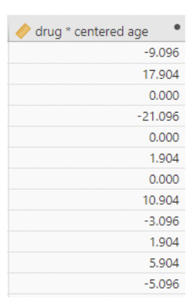
2.8.0.5 Only centering one predictor in JMP
Here are the results. Compare them to the previous two versions:
Only age centered:
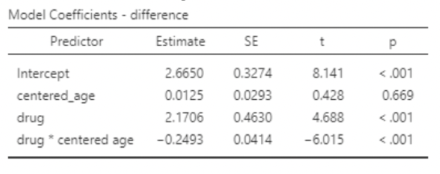
Age and drug centered in the interaction:
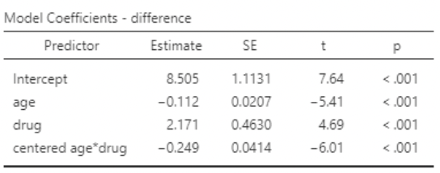
Nothing centered:
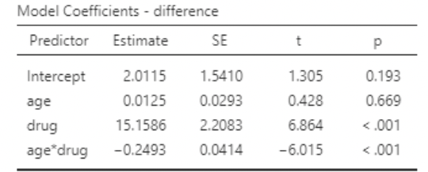
2.8.0.6 Only centering one predictor in jamovi
First, the slope for the interaction is the same in all three models.
Second, the slope for drug is the same in both centered models, but different in the non-centered model. It is the centering of age in the interaction that changed the slope for drug.
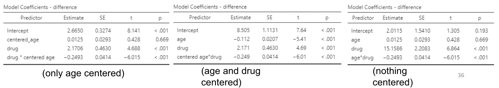
Third, the slope for age is the same in both models for which drug is not centered. This allows us to interpret it as before: slope for age is 0.0125 for the NSAID and is 0.0125 − 0.2493 = −0.2368 for the DMARD
Fourth, the standard error for drug is substantially smaller when age is centered in the interaction. This is typically the case when centering a continuous variable in an interaction.
2.8.0.7 Interpreting the intercept when centering
Finally, the intercept is different in all three models.
Normally we don’t care about the intercept, but centering allows the intercept to be meaningfully interpreted.
Since \([Center]age = age - \overline{age}, [Center]age = 0 \text{ when } age = \overline{age}\)
Remember that the intercept is interpreted as the “predicted value of the response when the predictors equal zero”.
So, when centering, the intercept is the predicted value of the response when the centered predictors equal their mean.
Going back to our example, the predicted reduction in inflammation (before minus after) for a patient at the average age in our data set who got the NSAID is 2.665.
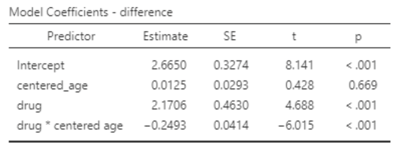
The predicted reduction in inflammation for a patient at the average age who got the DMARD is 2.665 + 2.171 = 4.836
2.9 Standardizing predictor variables
We will briefly consider an extension on centering: standardizing.
Recall from your introductory statistics course the standardization “z” formula:
\[ z = \frac{x - \mu}{\sigma}, \text{ or in words: } z = \frac{\text{value - mean}}{\text{standard deviation}} \]
To center a variable, we subtract the mean. To standardize, we subtract the mean and then divide by the standard deviation.
2.9.0.1 Why standardize?
Just like with a centered variable, the mean of a standardized variable is zero. So, standardizing has all the same benefits as centering when it comes to interpretation of interactions.
Standardizing has an additional potential benefit: the slope can be interpreted as the predicted change in \(Y\) for a one standard deviation increase in \(X\) (while holding all other predictors constant).
\(Z\) values are interpreted as “number of standard deviations from the mean”. And so increasing \(Z\) by \(1\) implies increasing \(X\) by \(1\) standard deviation.
2.9.0.2 Standardizing in jamovi
To standardize in jamovi we will need to create a new column defined by (age – VMEAN(age)) / VSTDEV(age).
We will also need to create a column for the new interaction and define it as drug*Standardized age
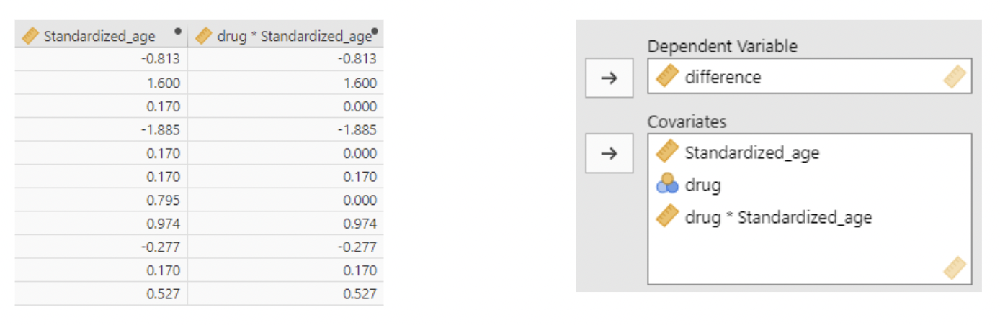
Here are the results when age is standardized:
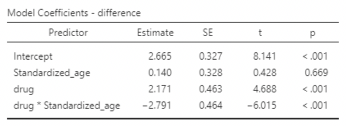
Compare to the results when age is centered:
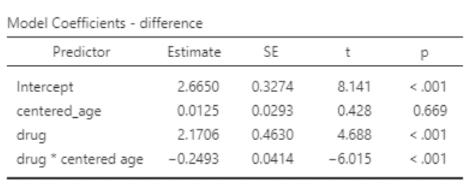
Note that the intercepts are the same. In both cases, the predicted reduction in inflammation for a patient at average age getting NSAID is \(2.665\). Likewise, in both cases this prediction is \(4.836\) for DMARD.
What has changed is the slope for terms involving age. Now, a one unit increase in standardized age is a one standard deviation increase in age.
So, for NSAID, the predicted difference in inflammation reduction for two people whose ages are one standard deviation apart is \(0.14\). For DMARD, it is \(0.14 – 2.79 = -2.64\).
How much is a standard deviation? We can look it up…
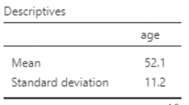
2.9.0.3 Interaction and centering / standardizing summary
This has been a long example. I encourage you to load up the data yourself and play around with it in jamovi. At the minimum, make sure you can re-create the results in these notes.
The most important take-aways:
Interaction terms allow the slope of predictor to change for different values of another predictor.
Centering helps make regression coefficients (slopes and intercepts) more interpretable. Standardizing allows you to interpret them in terms of one standard deviation changes, rather than “one unit” changes.